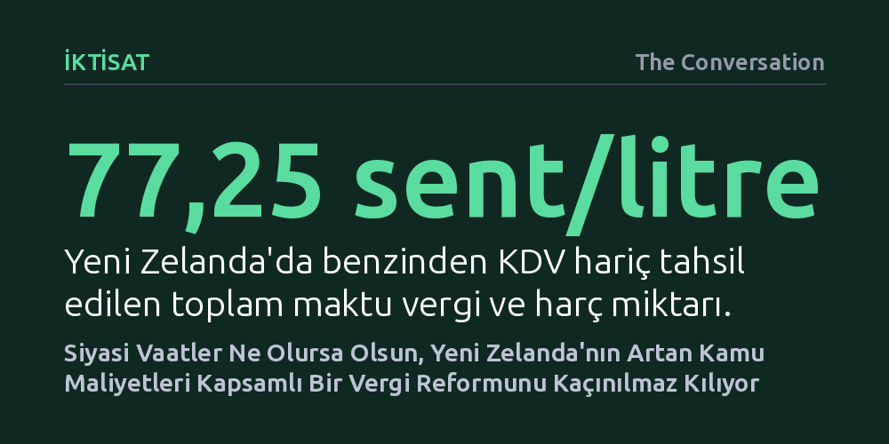

IKTISAT · The Conversation · 2026-10-27
Yeni Zelanda'da partilerin vaatleri ayrışsa da yaşlanan nüfus ve aşınan akaryakıt vergisi gelirleri kamu harcamalarını karşılamayı imkânsızlaştırıyor. Gelecek hükümetin harcamaları kısmak, borçlanmayı artırmak veya vergi sistemini kökten dönüştürmekten başka seçeneği bulunmuyor.
Vergi tartışmalarının yalnızca partiler arası ideolojik bir çekişme olmadığını, değişen tüketim kalıpları ve demografik baskılar karşısında mevcut vergi tabanının teknik olarak yetersiz kaldığını gösterir.

Yeni Zelanda'da yaklaşan genel seçimler öncesinde kamuoyunun ana gündemini hayat pahalılığı, işsizlik ve genel ekonomik durgunluk oluştursa da vergi politikaları partiler arasındaki en hararetli tartışma başlıklarından biri olmayı sürdürüyor. İşçi Partisi yatırım amaçlı gayrimenkullere sermaye kazancı vergisi getirmeyi hedeflerken, Yeşiller ve Te Pāti Māori doğrudan servet vergisini savunuyor. Fırsat Partisi evrensel temel geliri finanse etmek için radikal bir arsa değer vergisi teklif ederken, iktidardaki Ulusal Parti yeni vergi getirmeme sözü veriyor ve muhalefetin dokuz yeni vergi getireceğini iddia ediyor.
Ancak sandıktan hangi siyasi tablo çıkarsa çıksın, göreve gelecek yeni hükümet kaçamayacağı bir mali gerçeklikle yüzleşmek zorunda kalacak. Sağlık, eğitim ve altyapı sektörlerinde yıllardır biriken acil harcama ihtiyaçları, hızla yaşlanan bir nüfusun yaratacağı ağır emeklilik ve sağlık maliyetleriyle birleşiyor. Ülkenin yıllardır aşamadığı zayıf verimlilik artışı ve yükselen kamu borcu dikkate alındığında, siyasi söylemler ne olursa olsun bütçeyi dengelemek için harcamaları kısmak, daha yüksek faizle borçlanmak ya da vergi tabanını genişletmek dışında bir çıkış yolu görünmüyor.
Yeni Zelanda'nın mevcut mali yapısı, tehlikeli derecede dar bir tabana; neredeyse bütünüyle kişisel ve kurumsal gelirler ile mal ve hizmet tüketim vergisine (GST) yaslanıyor. Buna karşılık, gayrimenkul ve finansal varlıklardan elde edilen diğer ekonomik kazanımlar ya çok hafif vergilendiriliyor ya da tamamen vergi dışı kalıyor. Çok uluslu teknoloji devlerinin, dijital ticaretin ve yeni esnek çalışma modellerinin hızla yaygınlaştığı günümüz dünyasında, yalnızca geleneksel gelir ve tüketime odaklanan bir sistemin ekonomik değerin nerede üretildiğini tespit etmesi ve bunu adil biçimde vergilendirmesi giderek zorlaşıyor.
Yüzde 15 oranında uygulanan tüketim vergisi (GST), devlet açısından toplanması son derece kolay ve verimli bir gelir kaynağı olsa da toplumsal adalet açısından ciddi bir dengesizlik yaratıyor. Düşük gelirli haneler kazançlarının neredeyse tamamını temel mal ve hizmetlere harcamak zorunda olduklarından, orantısal olarak zenginlerden çok daha ağır bir vergi yükü taşıyor. Buna karşılık, sermaye ve gayrimenkul sahipleri vergi yüklerini yasal boşluklar yoluyla asgariye indirme esnekliğine sahipken, bordrolu çalışanların kazançları kuruşu kuruşuna vergilendiriliyor.
Mevcut vergi sisteminin teknolojik dönüşüm karşısında nasıl işlevsizleştiğinin en somut örneği, kara yolu ulaşımının finansmanında yaşanıyor. Tarihsel olarak Yeni Zelanda, yol kullanım bedelini akaryakıt tüketim vergisi üzerinden tahsil etti. Mevcut sistemde benzin fiyatının litre başına 77,25 sentlik kısmını KDV hariç vergi ve kesintiler oluşturuyor; bu tutarın 70 sentten fazlası doğrudan Ulusal Kara Yolu Ulaşım Fonu'na aktarılıyor. Benzin istasyonunda ödenen bu maktu vergi, uzun yıllar boyunca kara yollarının kullanımını ölçmede pratik bir gösterge işlevi gördü.
Fakat otomotiv teknolojisindeki ilerlemeler bu denklemi bozdu. İçten yanmalı motorların yakıt verimliliğinin artması, tüketilen benzin miktarını katedilen mesafenin güvenilir bir göstergesi olmaktan çıkardı. Daha da önemlisi, elektrikli araçların yaygınlaşmasıyla birlikte bu taşıtlar akaryakıt vergisinden tamamen muaf kaldı. Başlangıçta yeşil dönüşümü teşvik etmek amacıyla uygulanan bu muafiyet, zamanla 'kullanan öder' ilkesinden kopulmasına ve yol bakım bütçesinde büyük bir gelir erozyonuna neden oldu.
Bu yapısal sorunu çözmek amacıyla hükümet, Nisan 2024'ten itibaren hafif elektrikli ve şarj edilebilir hibrit araçları kilometre bazlı yol kullanım ücretine (RUC) bağladı ve Auckland'daki bölgesel akaryakıt vergisini kaldırdı. Nihai hedef ise benzin vergisini tamamen devreden çıkarıp bütün hafif araçları elektronik yol kullanım ücreti sistemine dahil etmek. Bu geçiş, geçmişin teknolojilerine göre kurgulanan vergilerin zamanla etkinliğini ve adaletini yitirdiğini açıkça ortaya koyuyor.
Yeni hükümetin önündeki mali tablo, ertelenemez reformları dayatıyor. Altyapı ve kamu hizmetlerini finanse etmek için kapsamlı bir vergi reformuna gidilmediği takdirde ek gelir sağlama imkânları son derece dar. Masadaki en somut seçeneklerden biri olan kapsamlı bir sermaye kazancı vergisi, vergi yükünü ödeme gücü daha yüksek olan kesimlere kaydırmayı hedeflese de böylesi bir adımın atılması tamamen yeni iktidarın siyasi cesaretine bağlı görünüyor.
Ancak her vergi politikası belirli tavizler ve toplumsal maliyetler barındırır. Makalede de vurgulandığı üzere, "ekonomimiz geliştikçe, geçmişe göre tasarlanmış vergiler daha az etkili ve nihayetinde daha adaletsiz hale geliyor." Bu nedenle seçmenlerin partilere yalnızca hangi vergileri getireceklerini değil; bu vergilerin kimden ne kadar kaynak toplayacağını, tasarruf ve yatırım kararlarını nasıl yönlendireceğini ve idari olarak nasıl uygulanacağını sorması gerekiyor. Yeni Zelanda'nın teknolojik, demografik ve ekonomik değişimlere dayanıklı bir mali yapıya kavuşması, bu zor soruların dürüstçe yanıtlanmasına bağlı.